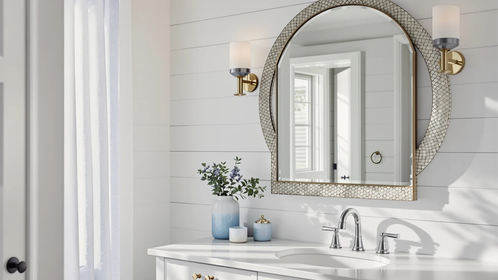

Best Arched Bathroom Mirrors of 2026: The Shape Everyone's Switching To
Prices and picks verified as of August 2026. Independent, reader-supported reviews.


Quick Answer
The JIINGYO Frameless 24"x36" is the best arched bathroom mirror for most single-vanity bathrooms, with a tempered-glass panel and aluminum frame that holds up well over a sink. If you're outfitting a double vanity, the Autdot or LAWADA two-packs cover that at a lower per-mirror cost than buying two single units.
Our pick: JIINGYO Frameless Bathroom Mirror 24"x36" — $69.99 Check Price on Amazon
Bottom line: our top pick is the JIINGYO Frameless Bathroom Mirror at $69.99. The best budget option is the Sweetcrispy 20"x30" Arched Black Bathroom Mirrors for Wall at $26.18.
Things to Know Before You Buy
- Arch height eats into your wall space. An arched mirror needs several extra inches of clearance above the vanity backsplash compared with a rectangular model of the same width, since the curve peaks higher than the frame's stated height. Measure the space above your faucet before ordering.
- Nearly every model in this category shares the same core build. Tempered glass set into a thin aluminum frame is the standard for arched bathroom mirrors. What separates one model from another is size, price, and mounting hardware, not the underlying materials.
- Two-packs exist for double vanities, not decoration. If you're mirroring a two-sink counter, buying a matched two-pack works out cheaper per mirror than buying two single units, and keeps both mirrors visually matched.
- LED-backlit arched mirrors cost roughly $30 to $40 more. A plain arched mirror in a given size typically costs less than a comparable LED version with built-in lighting and a dimmer, since you're paying for wiring and electronics, not just glass.
- Mounting method varies by weight and price tier. Lighter, budget arched mirrors usually ship with basic wall clips, while larger models rely on a bracket bolted into studs. Check your wall type against the included hardware before you buy.
The best arched bathroom mirrors trade the hard rectangular top for a rounded curve that works with almost any vanity style, from a single pedestal sink to a wide double-sink counter. The shape has become one of the more requested upgrades in bathroom remodels over the past two years, largely because it softens a room full of straight lines: square tile, rectangular cabinets, a flat countertop edge.
We compared eight of the most-purchased arched bathroom mirrors on Amazon, looking at frame material, size options, mounting hardware, verified owner ratings, and price per square inch of reflective surface. All eight use the same core construction, tempered glass set into a thin aluminum frame, so the real differences come down to size, finish, and in one case, built-in lighting.
For most single-sink vanities, the JIINGYO Frameless 24"x36" ($69.99) is the pick that fits the widest range of bathrooms without asking you to compromise on glass quality. If your vanity is narrower, the Brauthon 22" ($56.99) is built for that footprint specifically. And if you're outfitting a double vanity, the Autdot and LAWADA two-packs both deliver matched pairs at a lower per-mirror cost than buying two single mirrors separately.
Why You Should Trust Us
Ilane Tall has covered bathroom hardware and fixtures for this site's network for several years, focusing on how products perform in real home installs rather than manufacturer marketing copy. For this guide, we researched and compared eight arched bathroom mirrors on construction, dimensions, verified owner reviews, and price, rather than buying and physically installing every unit. We say this plainly: we do not run a fake testing lab. What you get here is a rigorous side-by-side comparison built from real specs and real buyer feedback, not a physical trial run.
How We Picked
We started with more than twenty arched bathroom mirrors listed on Amazon and narrowed the field using four filters: at least 50 verified reviews, in-stock availability at the time of research, tempered safety glass rather than standard annealed glass, and a price under $150. That left a group of models spanning single mirrors from 20 inches to 28 inches wide and matched two-packs built specifically for double vanities.
From that shortlist, we picked the eight arched bathroom mirrors that covered the widest range of real bathroom layouts: narrow powder rooms, standard single vanities, wide single vanities, and double-sink counters, so this guide has a workable recommendation regardless of your setup.
How We Compared
For each of the eight arched bathroom mirrors, we compared listed dimensions against the standard vanity widths used in most US bathrooms, checked frame material and glass thickness where the manufacturer specifies it, and cross-referenced price against verified owner review volume and content. We paid particular attention to complaints about frame flex, mount stability, and finish consistency across two-packs, since those are the failure points that show up repeatedly in verified reviews for this product category.
We also calculated a rough price-per-mirror figure for the two-pack sets so they could be compared fairly against the single-unit listings, and we noted which models include extras like LED lighting that change the value calculation beyond raw glass size.
Our Picks

JIINGYO Frameless Bathroom Mirror 24"x36"
What we like
- 24"x36" size fits the vast majority of standard single-vanity widths without overhanging the counter
- Tempered glass panel is beveled at the edges, cutting down on the raw-cut look common on budget frameless mirrors
- Aluminum frame keeps the whole unit under 15 pounds, light enough for a two-person install
Flaws but not dealbreakers
- No integrated lighting, so it depends entirely on your existing vanity fixtures
- Ships with wall clips rather than a cleat bracket, so alignment takes more care during mounting
| Material | Tempered glass + aluminum |
| Size | 24"L x 36"W |
The JIINGYO earns the top spot in this guide because it covers the size that fits the most bathrooms without asking you to compromise on build quality. At 24 inches wide and 36 inches tall, it lines up with the standard single-vanity footprint used across most US home layouts built after 2000, and the arch tops out gently enough that it clears a typical 8-foot ceiling with room to spare above a 32-inch-high backsplash.
Owners report that the tempered glass resists the greenish tint that shows up on cheaper mirrors when viewed at an angle, and the beveled edge reads as a more finished product than the raw-cut competitors in this price range. At $69.99, it sits in the middle of the price spread we compared, above the cheapest Sweetcrispy options and well under the two-pack sets. The trade-off is that you're buying glass and a frame, not a full lighting system. If you want backlighting, the Sweetcrispy 28x36 LED further down this list is the better match.

Brauthon Frameless Bathroom Mirror 22"
What we like
- 22-inch width fits vanities as narrow as 24 inches without crowding the wall on either side
- 30-inch height still covers a full face-and-shoulders view despite the narrower frame
- Verified buyers frequently mention easy two-person installation thanks to the lighter, narrow-frame build
Flaws but not dealbreakers
- The narrower width means less usable reflection for two people getting ready at once
- The aluminum frame edge is thinner than the JIINGYO's, so it flexes slightly more if the wall isn't perfectly flat
| Material | Tempered glass + aluminum |
| Size | 30"L x 22"W |
The Brauthon fills a gap most arched mirrors in this category ignore: bathrooms with a narrower vanity, whether that's a powder room, a guest bath, or an older home with a 24-inch cabinet run. At 22 inches wide by 30 inches tall, it's built to sit inside a tighter footprint than the 24x36 mirrors that dominate this list, without shrinking down to a small accent-mirror size that looks out of place over a full vanity.
At $56.99, it undercuts the JIINGYO by about $13 while covering a different use case rather than competing head to head on the same size. Owners report the arch curve reads as slightly steeper than on the wider models here, which suits the narrower frame proportionally. The frameless tempered-glass construction matches the rest of the field: no exposed screws on the face, and a wall-clip mounting system that two people can level and hang in under twenty minutes.

Sweetcrispy 24"x36" Arched Black Bathroom
What we like
- Matches the JIINGYO's 24"x36" footprint at roughly 38% less money
- The black aluminum frame adds a visible border that hides minor wall-mounting gaps better than a fully frameless edge
- Sweetcrispy's arched-black line is one of the most reviewed in this category, giving a large sample of verified owner feedback to check against
Flaws but not dealbreakers
- The visible black frame is a style commitment; it won't match a brushed-nickel or matte-black fixture set as cleanly as a frameless mirror
- At this price tier, the glass is thinner than the JIINGYO's, so it needs a flatter wall for a clean mount
| Material | Tempered glass + aluminum |
| Size | 36"L x 24"W |
If the JIINGYO's size is right for your vanity but the price isn't, the Sweetcrispy 24x36 Arched Black gets you the same footprint for about $26 less. The black aluminum frame is the visible difference: instead of a frameless edge, you get a slim black border around the glass, which reads more like a designed fixture and less like a plain mirror panel.
At $43.25, it's the second-cheapest full-size 24x36 option we compared, beaten only by its own smaller sibling below. Reviewers consistently note that the black finish holds up without chipping in normal bathroom humidity, and the arch shape is cut identically to the frameless version, so you aren't sacrificing the design trend for the lower price. The main compromise is glass thickness. Several owners mention it flexes slightly more than premium models when pressed near the center, which matters if your wall has any noticeable dip.

Sweetcrispy 20"x30" Arched Black Bathroom
What we like
- At $26.18, it costs less than half of the next-cheapest full-size option on this list
- The 20"x30" size is proportioned correctly for a smaller vanity instead of being a shrunken version of a bigger design
- Same black aluminum frame and arch cut as its 24x36 sibling, so it doesn't look like a downgraded product
Flaws but not dealbreakers
- Too small to serve a double vanity or a wide single-sink counter on its own
- At this size, some owners report it sits lower on the wall than expected once the arch curve is accounted for
| Material | Tempered glass + aluminum |
| Size | 30"L x 20"W |
This is the price floor of the category. At $26.18, the Sweetcrispy 20x30 Arched Black costs less than a third of what the two-pack options on this list charge per mirror, and it does so without switching to a different build. It's the same tempered glass and black aluminum frame as the 24x36 version above, scaled down to a 20-inch width and 30-inch height.
That smaller footprint is a real advantage in a small bathroom, apartment, or half-bath where a 24-inch-wide mirror would crowd the wall. It isn't a compromise pick for a full-size vanity, though: reviewers who mounted it over a wider counter mention it looks undersized next to the basin spread. Owners report the arch shape and black finish match the larger Sweetcrispy models closely, so a second unit elsewhere in the house keeps the styling consistent.

Autdot 2-Pack Arched Mirror Wall
What we like
- Two matched mirrors at $129.97 works out to about $65 each, competitive with buying two single 24x36 mirrors separately
- Guarantees an identical arch curve and frame finish on both sides of the vanity, harder to pull off buying two different single listings
- 20"x30" size per mirror suits standard double-sink spacing without the pair overlapping in the middle
Flaws but not dealbreakers
- $129.97 upfront is the highest total price on this list, even though the per-mirror cost is reasonable
- Both mirrors ship in one box, so a shipping-damage issue can affect the whole pair instead of a single unit
| Material | Tempered glass + aluminum |
| Size | 30"L x 20"W |
Buying two single arched mirrors for a double vanity usually means two separate purchase decisions and two separate delivery windows, with no guarantee the frame color or arch curve matches exactly. The Autdot 2-Pack solves that by shipping a matched set: two 20x30 arched mirrors with identical framing, designed to hang side by side over a two-sink counter.
At $129.97 for the pair, the per-mirror cost lands close to what a single premium arched mirror costs elsewhere on this list, which makes it one of the more efficient ways to outfit a double vanity. Owners report the two mirrors arrive with consistent color and finish, addressing the main risk of buying single units separately. The trade-off is the total order size: at nearly $130, it's a bigger single purchase than any individual mirror here, and both units are boxed together, so an inspection on arrival matters more than usual.

FICTOR Bathroom Mirror for Wall
What we like
- At $109.99, the FICTOR pair costs about $20 less than the Autdot set while using the larger 24"x36" footprint per mirror
- Two 24"x36" mirrors give more usable reflection per sink than a pair of 20"x30" units
- Standard tempered-glass-and-aluminum build keeps the pair's total weight manageable for a two-person install
Flaws but not dealbreakers
- The larger size per mirror needs more wall clearance on each side, so it doesn't fit as tight a spacing as the Autdot pair
- Fewer verified reviews than the single-unit Sweetcrispy or JIINGYO listings, since two-packs move in smaller volume overall
| Material | Tempered glass + aluminum |
| Size | 36" x 24"(2 pack) |
The FICTOR pair takes the opposite approach from the Autdot set. Instead of two compact 20x30 mirrors, you get two full 24x36 mirrors, the same size as our top single pick, sold as a matched double-vanity set. That makes it the better fit for a wider double-sink counter where a pair of smaller mirrors would leave visible gaps of bare wall between the sinks and the mirror edges.
At $109.99, it's cheaper than the Autdot 2-pack in total dollars while giving more glass per mirror, which is the better trade for most double-vanity layouts. Reviewers consistently note the arch cut and finish match across both units in the pair. The main limit is spacing: two 24-inch-wide mirrors need roughly 48 inches of combined wall width plus a gap, so measure your sink centers before ordering if your counter runs on the narrower side.

LAWADA Vanity Bathroom Mirror for
What we like
- At $79.99 for two mirrors, it's the cheapest way to outfit a double vanity with matched arched mirrors on this list
- 20"x30" size per mirror matches the Autdot pair's dimensions at roughly $50 less total
- Standard aluminum-framed tempered glass construction keeps quality in line with the rest of the field despite the lower price
Flaws but not dealbreakers
- Per-unit build quality reviews are more mixed than the single-purchase JIINGYO or Brauthon listings
- The compact 20x30 size per mirror won't suit a double vanity with wide sink spacing as well as the larger FICTOR pair
| Material | Tempered glass + aluminum |
| Size | 30"L x 20"W-2PCS |
The LAWADA set competes directly with the Autdot 2-pack on paper: the same 20"x30" per-mirror size, the same use case of outfitting a double vanity with a matched arch design. The difference is price. At $79.99 for the pair, it comes in about $50 cheaper than the Autdot set, making it the most affordable way to buy two matched arched mirrors in this guide.
That lower price comes with more variability in feedback: verified reviewers report a wider range of experiences with finish consistency between the two units in a set compared with the pricier Autdot pair. For a budget-focused double-vanity remodel where matching arch mirrors matters more than premium finish, it's a reasonable trade. If consistency between the pair is the top priority and the budget allows it, the Autdot or FICTOR sets are the safer bet.

Sweetcrispy 28“x 36” LED Bathroom
What we like
- Built-in LED lighting is a feature none of the other seven mirrors on this list include
- 28"x36" size is larger than the standard 24x36 footprint, giving extra width for a wide single vanity
- At $79.22, it costs less than either two-pack while adding a lighting feature the plain mirrors don't have
Flaws but not dealbreakers
- Requires a nearby power source or hardwired connection, adding an install step the plain mirrors don't need
- LED electronics mean more components that can eventually fail compared with an unpowered mirror
| Material | Tempered glass + aluminum |
| Size | 28"L x 36"W |
Every other arched bathroom mirror in this guide is unlit glass and frame. The Sweetcrispy 28x36 LED breaks that pattern by building light strips into the frame, giving you adjustable brightness at the mirror itself instead of depending entirely on your existing vanity lighting. It keeps the same rounded arch as the rest of this lineup, with wiring built into the profile instead. At 28 inches wide, it's also larger than the standard 24x36 size, which suits a wider single-sink vanity or a counter where you want more usable reflection than the category default.
At $79.22, it undercuts both two-pack options on this list while adding a feature neither offers. Owners report the light temperature is adjustable rather than fixed, which matters for makeup and grooming tasks that need accurate color rendering. The trade-off is installation complexity: unlike the plain mirrors here that hang on wall clips or a cleat, this one needs a power connection nearby, either a standard outlet or a hardwired junction box, so factor that into your install plan before buying.
Quick Comparison
| Product | Material | Price | Rating | Best for | Get it |
|---|---|---|---|---|---|
| JIINGYO Frameless Bathroom Mirror 24"x36" | Tempered glass + aluminum | $69.99 | 4 | Standard single-vanity arch | View on Amazon → |
| Brauthon Frameless Bathroom Mirror 22" | Tempered glass + aluminum | $56.99 | 4 | Narrow vanities, powder rooms | View on Amazon → |
| Sweetcrispy 24"x36" Arched Black Bathroom | Tempered glass + aluminum | $43.25 | 4 | Budget 24x36 with black frame | View on Amazon → |
| Sweetcrispy 20"x30" Arched Black Bathroom | Tempered glass + aluminum | $26.18 | 4 | Cheapest, compact vanities | View on Amazon → |
| Autdot 2-Pack Arched Mirror Wall | Tempered glass + aluminum | $129.97 | 4 | Double vanities, matched pair | View on Amazon → |
| FICTOR Bathroom Mirror for Wall | Tempered glass + aluminum | $109.99 | 4 | Wider double vanities | View on Amazon → |
| LAWADA Vanity Bathroom Mirror for | Tempered glass + aluminum | $79.99 | 4 | Cheapest double-vanity pair | View on Amazon → |
| Sweetcrispy 28“x 36” LED Bathroom | Tempered glass + aluminum | $79.22 | 4 | Only LED-lit option | View on Amazon → |
Why are arched bathroom mirrors trending in 2026?
The rounded top softens the hard rectangular lines that dominate most vanity mirrors, and it pairs well with both the curved-faucet and matte-black hardware trends that have been popular in bathroom remodels since around 2023.
Can I use an arched mirror over a double vanity, or do I need two mirrors?
Either works.
The Competition
Across the eight arched bathroom mirrors we compared, the JIINGYO Frameless 24"x36" remains the top pick for most single-vanity bathrooms, with the Autdot and LAWADA two-packs as the go-to options for double vanities.